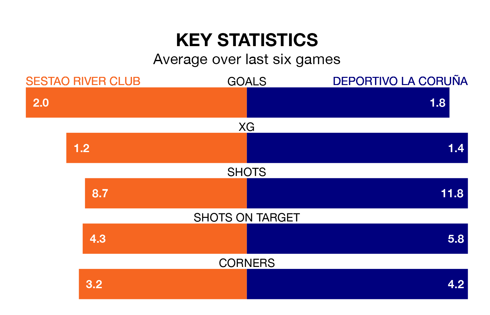

Relegation candidates Sestao River Club face a challenge against high-flying Deportivo La Coruña at the Estadio Las Llanas on Saturday.
Sestao River Club are 18th in the Primera Division RFEF Group 1 table, and have picked up eight wins and 11 draws in their 33 games to date.
Deportivo La Coruña, meanwhile, are top of the standings with 68 points, having won 19 and drawn 11 of their first 34 matches.
With 58 goals in 34 games so far this season, Deportivo La Coruña are the league's second-highest scorers with 1.7 goals per game. And they are conceding fewer than average, letting in 25 goals at a rate of 0.7 per game.
Sestao River Club, meanwhile, are below average scorers, with 1.0 goal per game, compared to a league average of 1.1. They have conceded 1.4 goals per game.
The hosts are in mixed form in Primera Division RFEF Group 1, with three wins and a draw from their last six games.
With five wins and a draw over that period, the away side's form is much better – they have taken 16 points from 18, compared to Sestao River Club's 10.
Deportivo La Coruña's Lucas Perez is the league's most creative player, racking up 12 assists in 23 appearances so far this season.
For Sestao River Club, Jon Guruzeta has set up the most goals, having laid on six assists in 22 games.
Sestao River Club's last match was on Saturday, a 1-1 draw against UE Cornellà, with Leandro Martínez Ortiz getting the goal for Sestao River Club.
Deportivo La Coruña drew 2-2 with Arenteiro last time out, on Sunday, with David Mella Boullón and Diego Villares Yáñez on the scoresheet.
Updated: 10:44 (UTC), 30/04/24